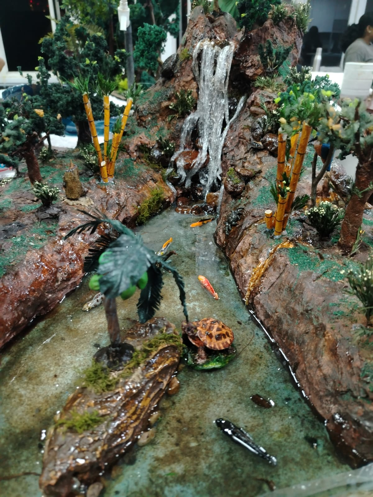

Upper course
Headwaters
Often steeper and narrower, with faster currents, cooler water and coarse substrates such as boulders, cobbles and gravel. Riffles, cascades and shaded stream habitats may be common.

Explore how rivers and streams work as living freshwater ecosystems — from flowing water and river habitats to biodiversity, food webs, ecological adaptations and conservation.
Explore the Kelani Basin species profiles (PDF)A river or stream is a lotic freshwater ecosystem — an aquatic environment in which water flows in a particular direction through a channel. Its living communities are shaped by current, water depth, light, temperature, dissolved oxygen, nutrients, sediments and connections with the surrounding land.
Rivers are connected systems: water, sediments, nutrients, leaf litter and organisms move between headwaters, tributaries, main channels, floodplains and downstream habitats.
Often steeper and narrower, with faster currents, cooler water and coarse substrates such as boulders, cobbles and gravel. Riffles, cascades and shaded stream habitats may be common.
The channel commonly becomes wider. Pools and riffles create a range of flow conditions and habitats, while tributaries add water, sediment and organic matter.
Gradients are often gentler and channels may be wider, with slower-flowing sections, finer sediments, wetlands and floodplain connections.
Velocity, discharge and turbulence influence oxygen exchange, sediment transport and where organisms can live.
These affect photosynthesis, metabolism and the amount of oxygen water can hold. Riparian shade can moderate stream temperatures.
Oxygen supports aquatic respiration, while pH affects chemical conditions and the survival of aquatic organisms.
Boulders, gravel, sand, silt and leaf litter provide different habitats. Nutrients support productivity, but excessive inputs can cause ecological problems.
Algae, attached biofilms and aquatic plants use sunlight to produce organic matter through photosynthesis.
Insect larvae, crustaceans, snails, fish, amphibians, reptiles and birds feed on plants, algae, detritus or other animals.
Bacteria and fungi break down dead organic matter and help recycle nutrients through the ecosystem.
Trees, shrubs, grasses and other streamside plants shade the channel, contribute leaf litter and help hold riverbanks together.
Energy enters many stream food webs through photosynthesis by algae and aquatic plants. It also enters as leaves and other organic matter from the surrounding land. Aquatic invertebrates and other consumers feed on algae, plant material, detritus and smaller organisms. Fish, amphibians, reptiles and fish-eating birds may occupy higher trophic levels. Decomposers break down dead material and return nutrients to the system.
Remember: A food web is a network of feeding relationships, not a single food chain. The exact links vary with species, season and habitat.
Some species have streamlined body shapes that help them move and maintain position in flowing water.
Many gobies have fused pelvic fins that form an adhesive disc, helping them hold onto surfaces.
Some larvae have flattened bodies, hooks, claws or silk structures that help them cling to rocks and other surfaces.
Extensive root systems can bind stream banks, reduce erosion and provide shelter for aquatic and terrestrial organisms.
Rivers and streams provide habitat and breeding areas, transport water and sediments, connect aquatic and terrestrial habitats, support nutrient cycling and sustain biodiversity. They also contribute to human wellbeing through water supply, food, recreation and cultural values.
Pollution, excess sediment, riparian vegetation removal, habitat fragmentation, altered flow, invasive species and unsustainable resource use can affect freshwater ecosystems.
Maintain native streamside vegetation, reduce pollution at its source, protect natural flow patterns, manage catchments carefully and monitor water quality and biodiversity.
Use these resources to explore freshwater ecosystems beyond the model. Video titles are kept generic here because their exact titles have not yet been supplied.
Watch the complete playlist shared for this project.
Open playlist ↗Educational material about water, watersheds and freshwater science.
Explore USGS resources ↗Learn how land, water and human activities are connected within watersheds.
Explore watershed resources ↗Explore global freshwater species and conservation information.
Explore IUCN freshwater work ↗The following profiles provide a regional example of the plants and animals associated with river, stream, wetland and riparian habitats in the Kelani River Basin. They are one part of this broader river-and-stream learning resource.
Calophyllum walkeri
Upper Kelani headwaters; stabilises steep slopes and supplies leaf litter to upland streams.
Syzygium revolutum / S. rotundifolium
Upper montane wet forests; flowers support insects and berries sustain highland birds.
Magnolia nilagirica
Upper-course montane forests; contributes leaf litter and seeds for frugivorous birds.
Gordonia ceylanica
Central highland wet forests; supports pollinators and catchment structure.
Ochlandra stridula
Upper and middle basin streamsides; rhizomes help bind steep stream banks.
Balanocarpus kitulgalensis
Middle Kelani near Kitulgala; anchors and shades foothill streams.
Shorea gardneri / Cryptocarya wightiana / Myristica dactyloides
Middle Kelani foothills; canopy moderates stream temperatures and supplies organic litter.
Dipterocarpus zeylanicus / D. hispidus
Lower-to-middle Kelani wet-zone forests; canopy, carbon storage and soil stabilisation.
Mesua ferrea
Lower basin and cultural landscapes; flowers attract native bees and beetles.
Barringtonia racemosa
Lower Kelani riverbanks; root mats resist flood scouring and fruits disperse by water.
Shorea trapezifolia / Cullenia rosayroana / C. zeylanica
Lower catchment wet evergreen forests; maintain canopy and provide food for birds and mammals.
Madhuca neriifolia / Hydnocarpus venenatus / Horsfieldia iryaghedhi
Wet-zone tributary banks; buffer trees bind banks, shade channels and intercept runoff.
Caryota urens / Areca catechu
Mid-to-lower banks; fibrous roots help anchor moist banks.
Bambusa vulgaris / Cocos nucifera / Artocarpus heterophyllus
Lower banks and delta areas; provide shade, litter and bank support in modified landscapes.
Nelumbo nucifera / Nymphaea spp.
Calm lower-basin pools and backwaters; shade shallow water and provide cover for juvenile fish.
Vallisneria spp. / Cryptocoryne spp.
Clear, shaded-to-moderately lit streams and slower channels; provide habitat and stabilise sediments.
Eichhornia crassipes (syn. Pontederia crassipes)
Introduced species; dense mats can block light and contribute to low dissolved oxygen. The source excludes it as a desirable native model feature.
Puntius titteya
Shaded, slow-flowing wet-zone streams with leaf litter; feeds on algae, detritus and small invertebrates.
Schismatogobius deraniyagalai
Clear shallow sandy runs; a sand-burrowing micro-predator associated in the source with clean sandy riverbeds.
Channa punctata
Slow-flowing lower reaches, ponds and vegetated margins; predator in lowland food webs.
Puntius kelumi
Kelani basin record near Kitulgala; omnivorous fish of wet-zone rivers.
Channa ara
Deep pools and larger streams; large native predator that guards its nest.
Systomus asoka
Clear, fast-flowing rocky foothill tributaries around Kitulgala and Deraniyagala.
Melanochelys trijuga
Quiet vegetated pools and slow river reaches; omnivorous scavenger contributing to nutrient cycling.
Halcyon smyrnensis
Perches over shallow pools and banks; links aquatic and terrestrial food webs by catching fish, frogs, crabs and insects.
Crocodylus palustris / C. porosus
Freshwater rivers versus tidal estuaries; the source highlights the need to distinguish their habitat zones.
Ceylonthelphusa armata
Rocky crevices, submerged roots and streamside burrows; breaks down leaf litter and supports nutrient cycling.
Polypedates cruciger / Pseudophilautus spp.
Moist riparian foliage and understory; the source describes amphibian sensitivity and contrasting reproductive modes.


.jpg)